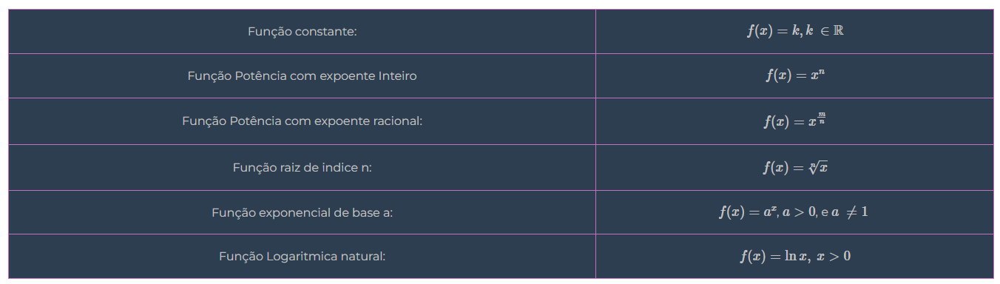
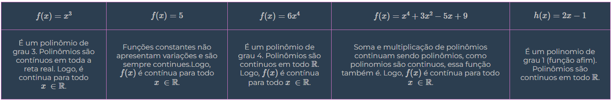
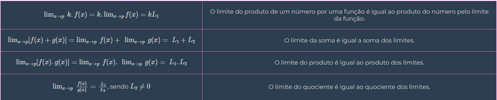
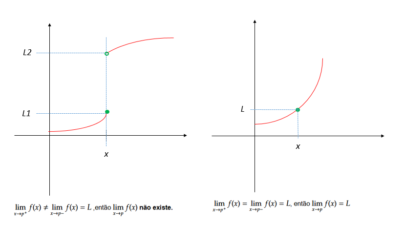

Continuidade e Limite
Conceito intuitivo de Continuidade
Uma função é contínua em um ponto x=p se seu gráfico não apresenta "saltos" nesse ponto(significa que seu gráfico pode ser desenhado sem tirar o lápis do papel). Isso significa que, ao nos aproximarmos de p, os valores da função também se aproximam de f(p). Simbolicamente, isso é escrito como: \[ \lim_{x \rightarrow p} f(x) = f(p) \]
Se houver um salto no gráfico em x=p , a função será descontínua nesse ponto.

No primeiro gráfico, vemos a função \(f(x) = x^2\), que é contínua porque seu gráfico não apresenta saltos. Conforme x se aproxima de qualquer ponto p, os valores de \(f(x)\) também se aproximam de \(f(p)\).
No segundo gráfico, temos uma função com um salto em x = 1. Para valores menores que 1, \(g(x) = 1\), e para valores maiores ou iguais a 1, \(g(x) = 3\). Isso cria uma descontinuidade porque, ao nos aproximarmos de x = 1 pela esquerda \(x\rightarrow 1^{-}\), g(x) vale 1, mas pela direita \(x\rightarrow 1^{+}\), \(g(x)\) vale 3. Como os limites não coincidem, a função é descontínua nesse ponto.
Reconhecimento de uma função contínua sem o auxílio do gráfico
Tabela de funções contínuas básicas
Propriedades operatórias com funções contínuas:
- A soma de duas funções contínuas também é contínua
- Multiplicar uma função continua por um número mantém a continuidade.
- O produto de duas funções contínuas continua sendo uma função continua
- O quociente (divisão) de duas funções contínuas também é contínuo, desde que o denominador não seja zero.
- Se \(y=f(u)\) e \(u=g(x)\) forem continuas, então a função composta h(x)=f(g(x)) também será continua.
Importante:
- Só podemos analisar continuidade em pontos que pertencem ao domínio da função.
- Quando dizemos que uma função é contínua, significa que ela não tem "saltos" em nenhum ponto do seu dominio.
Exemplos:
Isso está correto?
Não! \(\frac{0}{0}\) é uma indeterminação e não um valor definido.
É necessário fazer uma fatoração, neste caso vamos utilizar soma e produto:
\[ {t^{2} -5t+6} \]
\[ \begin{array}{l} x_{1} +x_{2} =\frac{-b}{a} =\frac{-( -5)}{1} =5\\ \\ x_{1} .x_{2} =\frac{c}{a} =\frac{6}{1} =6\\ \\ 2+3=5\\ \\ 2.3=6 \end{array} \]
Depois pega o sinal de meio, ficando \((t-2).(t-3)\)
\[ \lim _{t\rightarrow 2}\frac{t^{2} -5t+6}{t-2} =\lim _{t\rightarrow 2}\frac{( t-2) .( t-3)}{t-2} =\frac{( 2-2) .( 2-3)}{2-2} =-1 \]
Limite com indeterminação
O limite de uma função f(x) quando x tende a p representa o valor que f(x) se aproxima conforme x se aproxima de p. Se a função for contínua em p, então o limite é simplesmente f(p). No entanto, em alguns casos, ao tentar calcular diretamente, encontramos indeterminações, como \(\frac{0}{0}\). Para resolver isso, utilizamos técnicas algébricas, como a fatoração, para simplificar a expressão antes de substituir o valor de x. Os produtos notáveis são expressões algébricas padronizadas, como quadrados e diferenças de termos, que facilitam a fatoração e ajudam a eliminar termos indeterminados, permitindo o correto cálculo do limite.

Propriedades operatórias dos limites
Seja uma constante e sejam f(x) e g(x) funções tais que: \(\lim _{x\rightarrow p} f( x) =L_{1}\) e \(\displaystyle \lim _{x\rightarrow p} g( x) =L_{2}\). Nessas condições tem-se que:
Exemplos:
Suponha que: \(\displaystyle \lim _{x\rightarrow 2} \ f( x) =\ 4\) e \( \lim_{x\rightarrow{}2} g(x)= -3\)
a) \(\displaystyle \lim _{x\rightarrow 2} \ 7f( x) =\ 7.4=28\)
b) \(\displaystyle \lim _{x\rightarrow 2} \ -2g( x) =-2( -3) =6\)
c) \(\displaystyle \lim _{x\rightarrow 2} \ 5f( x) +\ 4g( x) =\ 5.( 4) \ +\ 4.( -3) =20-12=8\)
Limites Laterais
Definição
Quando x se aproxima de p por valores maiores que p, o limite de f(x) é \(L_{1}\)
Quando x se aproxima de p por valores menores que p, o limite de f(x) é \(L_{2}\)
Condições para Existência do Limite
Observação:
Se f(x) não estiver definida em um dos lados de p, o limite de f(x) nesse ponto será igual ao limite existente.
Exemplos:
\(\displaystyle f( x) \ =\ \begin{Bmatrix} x\ se\ x\geq 1 & \\ -x\ se\ x< \ 1 & \end{Bmatrix}\), determine os limites \(\displaystyle \lim _{x\rightarrow 1^{+}} f( x)\) e \(\displaystyle \lim _{x\rightarrow 1^{-}} f( x)\)
Precisamos determinar os limites laterais e o limite geral em x=1
1. Cálculo dos limites laterais
Quando x tende a 1 pela direita (x > 1), a função segue a regra f(x) = x. Portanto:
\[ \displaystyle \lim _{x\rightarrow 1^{+}} f( x) =\ \lim _{x\rightarrow 1^{+}} x=1 \]
Quando x tende a 1 pela direita (x < 1), a função segue a regra f(x)=-x
\[ \displaystyle \lim _{x\rightarrow 1^{-}} f( x) =\ \lim _{x\rightarrow 1^{-}} -(x)=-1 \]
2. Verificação do limite geral \(\displaystyle \lim _{x\rightarrow 1} f( x)\)
Para que o limite de f(x) em x = 1 exista, os limites laterais devem ser iguais.
Como \(\displaystyle \lim _{x\rightarrow 1^{+}} f( x) =\ 1\) e \(\displaystyle \lim _{x\rightarrow 1^{-}} f( x) =\ -1\), temos que:
\[ \lim _{x\rightarrow 1^{+}} f( x) \neq \ \lim _{x\rightarrow 1^{-}} f( x) \]
Portanto, o limite \(\displaystyle \lim _{x\rightarrow 1} f( x)\) não existe.